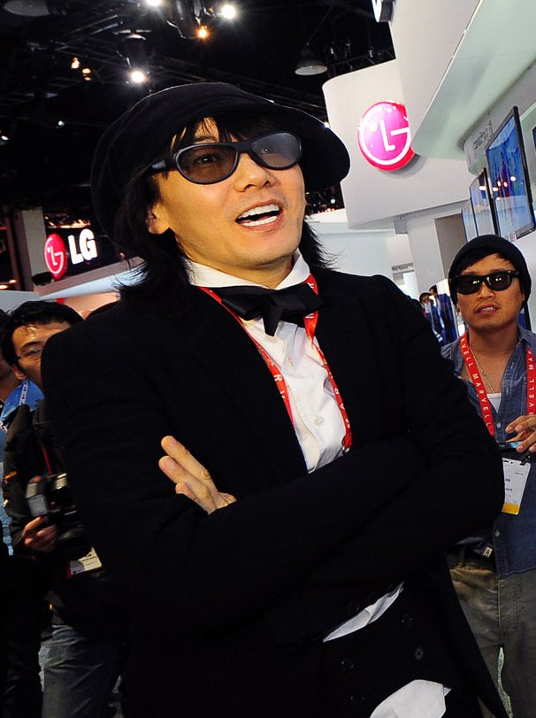

"내 열애설은 네가 마지막일 거야." 김장훈이 이 말을 꺼내자 이소라는 "진짜인 줄 알잖아"라며 당황했어요. 8일 SBS '미운 우리 새끼'에 1963년생 최고령 아들로 합류한 김장훈, 그리고 그의 집을 찾은 30년 지기 이소라 이야기예요. 둘 사이 소문이 왜 났는지부터 연금 이야기 끝에 나온 '다시 기부'까지 순서대로 정리했어요.
📷 사진 1 자리
▲ 사진: LG전자 / CC BY 2.0 / 위키미디어 공용
대학로를 손잡고 걷던 두 사람
인연의 시작은 이소라의 무대였어요. 김장훈은 원래 '낯선 사람들' 노래를 좋아하지 않았는데, 25살 이소라가 '왜 늘'을 부르는 걸 보고 충격을 받아 쫑파티에서 먼저 다가갔다고 털어놨어요.
열애설은 그 뒤 대학로에서 나왔어요. 둘이 손을 잡고 거리를 다니니 지나가던 사람들이 연인으로 볼 수밖에 없었다는 게 김장훈의 설명이에요. 그래도 선은 분명히 그었죠. "열애설이 난 거지, 연애한 건 아니잖아."
이소라의 답도 비슷했어요. 손을 잡거나 팔짱을 끼는 건 지금도 하는 자연스러운 습관이고, 의지하는 게 좋아서 그런다는 거예요. 그게 오해를 살 수 있다는 건 나중에야 알았다고 했어요.
▶ 영상 1 자리
옷장에서 싱크대까지, 이소라의 방문
복층 집에 들어선 이소라는 드레스룸의 화려한 무대 의상을 둘러보더니 옷장에서 입을 만한 옷을 골라 주고, 머리 손질까지 맡았어요.
싱크대에 쌓인 그릇을 보고는 설거지도 시작했어요. 김장훈의 반응은 "너 진짜 엄마 같다"였고요. 스튜디오의 서장훈은 예능에서 이소라가 설거지하는 모습은 처음 본다며 놀랐고, 신동엽은 "아주 귀한 분"이라며 반겼어요.
연금 이야기 끝에 나온 '다시 기부'
이날 김장훈은 국민연금 예상 수령액을 듣고 깜짝 놀랐어요. 액수는 방송에 나오지 않았지만 "그렇게 많이 줘요?"라며 놀라는 장면은 SBS 공식 클립으로 올라와 있어요.
▶ 영상 2 자리
이소라를 만나서도 자랑이 이어졌어요. 곧 연금이 나오고 내후년부터는 지하철도 공짜라는 거예요. "그럼 이제 노래 안 해도 되는 거야?"라는 이소라의 농담에 돌아온 답은 의외였어요. 돈을 모으려다가 다시 기부하기로 했다는 것이죠.
이소라는 그 말에 오래전 일을 꺼냈어요. 자신의 음악 프로그램 녹화가 새벽까지 이어지자 김장훈이 관객들 택시비를 챙겨 줬다는 이야기예요. 김장훈은 녹화가 늦게 끝나 관객들에게 너무 미안했다고 이유를 밝혔어요.
노래 활동은 지금도 이어지고 있어요. 방송 전날인 7일, 김장훈은 MBC '쇼! 음악중심'에서 '슬픈 선물' 2026 버전을 불렀어요.
▶ 영상 3 자리
정리하면서 눈에 띈 건 '노래 안 해도 되냐'는 농담이 나온 타이밍이었어요. 바로 전날 음악방송에서 '슬픈 선물'을 새 버전으로 불렀으니, 농담과 달리 무대는 이미 이어지고 있던 셈이에요. 대학로 이야기 클립만 봤다면 '슬픈 선물' 2026 버전 무대도 이어서 보길 권해요.
✍️ 직접 보거나 들은 경험이 있으면 위 문단에 한두 줄 덧붙이세요 (이 안내 줄은 지우기)
두 사람의 소문은 대학로에서 손잡고 다닌 데서 나왔고, 둘 다 연애는 아니었다고 정리했어요. 미우새 장면은 SBS Entertainment, '슬픈 선물' 2026 버전 무대는 MBCkpop 공식 유튜브 채널에서 다시 볼 수 있어요.
